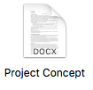
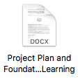
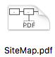
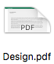
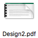
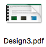
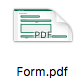

The Project
I went into this project with the essential question “How Can I Effectively Design and Code a Website That Serves a Practical Purpose?”
My goal was to make a website that could do something. A website that wasn't just some static pages sitting on a server, but an application that could be used for something.
My pre-product prep work:


Note that my thoughts about how I would make my product are completely different in these documents. Like that one section on why I wouldn't be using PHP. But here I am with a website using PHP frameworks...
My Design Files:





Files were made in Adobe illustrator, but I converted them to PDF for better accessibility. Designs are in order of creation. Design3.pdf & Form.pdf are the final renditions.
How the Application Works
http://www.slimframework.com/docs/
I used Slim primarily for its routing capabilities. This is how each page is dynamically created. Slim is checking to see what number or name is coming after /pages/ and /user/ respectively, and then pulling the data that correlates with it. It then sends this data to a twig template.
https://twig.symfony.com/doc/2.x/
Twigs role is to template out what the base user page looks like, with places for each piece of data that slim sends its way. It also hold the templates for the Header, Footer, and Navigation Bar, so that they don’t have to be copy pasted in to every page on the site, but can just be linked to through a template.
SQLite - A relational database mangement system.
https://www.sqlite.org/index.html
SQLite is the Database used to store everyones project data. The database is set up like so:
| ID | Name | Essential Question | Bio | img1 | img2 | img3 | url |
|---|---|---|---|---|---|---|---|
| 1 | Mark | ...? | ... | ... | ... | ... | ... |
| 2 | Jacob | ...? | ... | ... | ... | ... | ... |
| 3 | Cole | ...? | ... | ... | ... | ... | ... |
SQLite was used for this project because of its simplicity. SQLite databases are stored simply in a .sqlite file, and don't require much effort at all to set up and manage. It is also simplier to connect to it with PDO, as it doesn't need any sort of authentication, you just need to link to its location.
Coding the Design
Bootstrap - A framework for HTML & CSS designs.
https://getbootstrap.com/docs/4.3/getting-started/introduction/
I used Bootstrap for help with coding my designs into actuality. The idea with Bootstrap is that there is no point in coding a navbar, if countless people already have before you. No need to re-invent the wheel per se. With Bootstrap I was able to easily throw a navbar onto my site, and style it with ease. Bootstrap's grid system also came in handy – It is infact used on this page in the section above to set the 'Slim' section in a column of its own, apart from the 'Twig' section, while stil having them both on the same row.
FontAwesome - A Library of Vector Icons.
https://fontawesome.com/
I used FontAwesome for the icons that you see on the site. There are only a few, but it adds detail to the site. You can see some in use on the footer of the landing page.